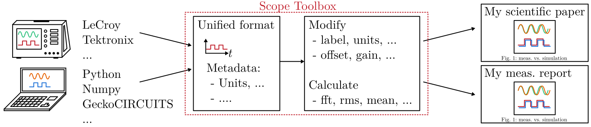

1 Scope toolbox for documentation purposes and comparisons
- Processing and comparison of time domain data similar to oscilloscopes in electronics. Typically used for technical comparisons in
Bachelor / Master / Ph.D. theses,
Scientific papers,
Technical manuals, and
Measurement reports.
1.1 Overview
Bring measurements from the oscilloscope and the circuit simulator into a standardized format. Edit the signals by shifting them in time (different zero points) or define the zero point for measuring equipment that can only record AC. Calculate the FFT or important values such as RMS, mean etc. Bring the originally different input formats into common plots to make comparisons easy.
1.2 Getting started
Install this repository into your virtual environment (venv) or jupyter notebook:
pip install pysignalscope
Use the toolbox in your python program:
import pysignalscope as pss
...
1.3 Examples
Have a look at the example, to see what you can do with this toolbox.
1.4 Bug Reports
Please use the issues report button within GitHub to report bugs.
1.5 Changelog
Find the changelog here.
2 pySignalScope function documentation
Functions uses by the scope, e.g. the fft-function.
- pysignalscope.functions.fft(period_vector_t_i: List[List[float]] | ndarray, sample_factor: int = 1000, plot: bool = True, mode: str = 'rad', f0: float | None = None, title: str = 'ffT', filter_type: str = 'factor', filter_value_factor: float = 0.01, filter_value_harmonic: int = 100, figure_size: Tuple | None = None, figure_directory: str | None = None) List[List]
Calculate the FFT for a given input signal. Input signal is in vector format and should include one period.
Output vector includes only frequencies with amplitudes > 1% of input signal
- Minimal Example:
>>> import pysignalscope as sp >>> import numpy as np >>> example_waveform = np.array([[0, 1.34, 3.14, 4.48, 6.28],[-175.69, 103.47, 175.69, -103.47,-175.69]]) >>> out = sp.fft(example_waveform, plot=True, mode='rad', f0=25000, title='ffT input current')
- Parameters:
period_vector_t_i (np.array) – numpy-array [[time-vector[,[current-vector]]. One period only
sample_factor (int) – f_sampling/f_period, defaults to 1000
plot (str) – insert anything else than “no” or ‘False’ to show a plot to visualize input and output
mode (str) – ‘rad’[default]: full period is 2*pi, ‘deg’: full period is 360°, ‘time’: time domain.
f0 (float) – fundamental frequency. Needs to be set in ‘rad’- or ‘deg’-mode
title (str) – plot window title, defaults to ‘ffT’
filter_type (str) – ‘factor’[default] or ‘harmonic’ or ‘disabled’.
filter_value_factor (float) – filters out amplitude-values below a certain factor of max. input amplitude. Should be 0…1, default to 0.01 (1%)
filter_value_harmonic (int) – filters out harmonics up to a certain number. Default value is 100. Note: count 1 is DC component, count 2 is the fundamental frequency
figure_directory (Tuple) – full path with file extension
figure_size (Tuple) – None for auto-fit; fig_size for matplotlib (width, length)
- Returns:
numpy-array [[frequency-vector],[amplitude-vector],[phase-vector]]
- Return type:
npt.NDArray[list]